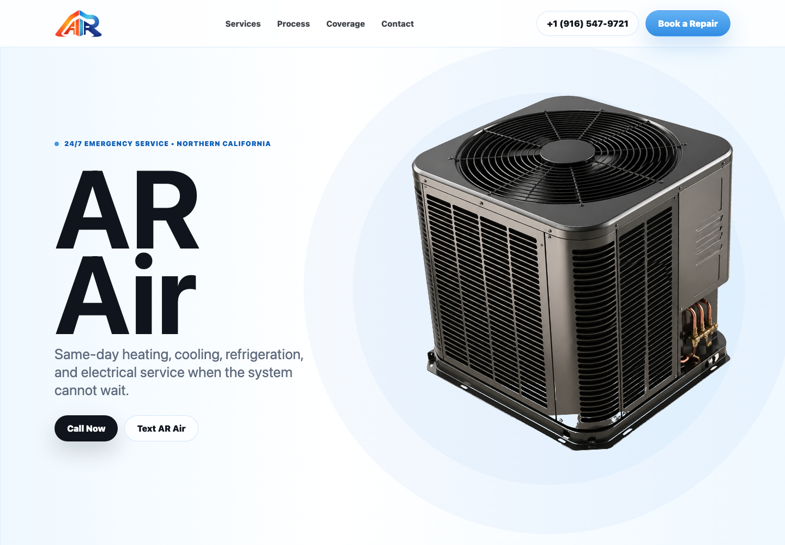
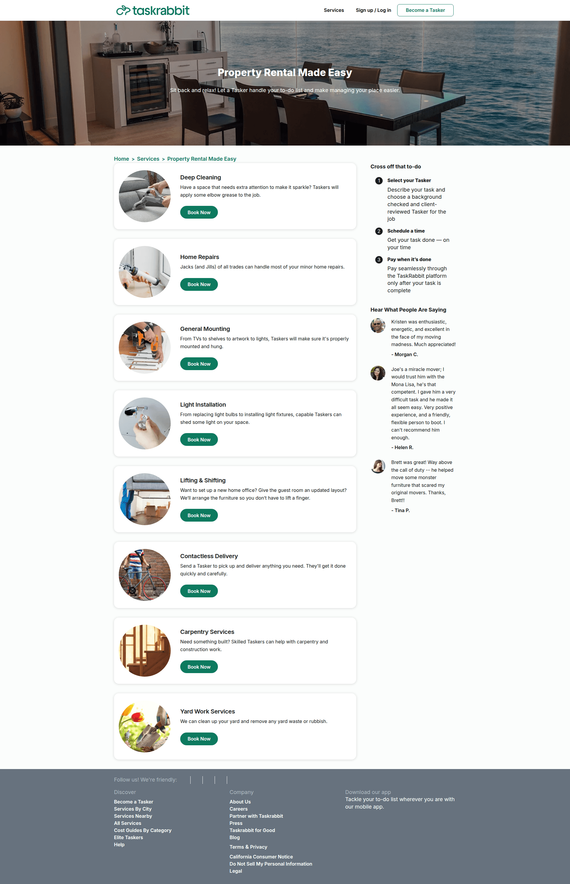
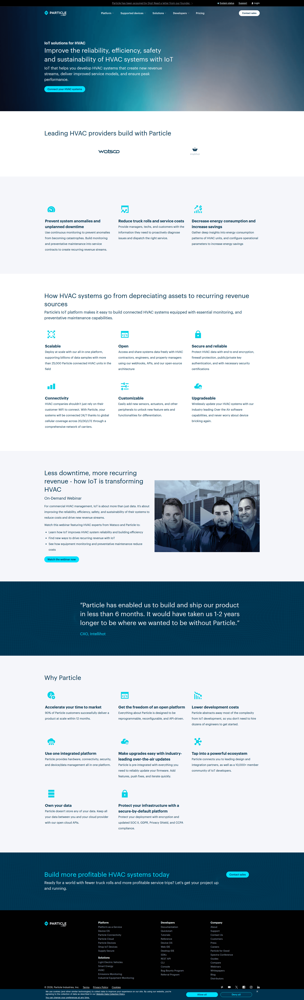
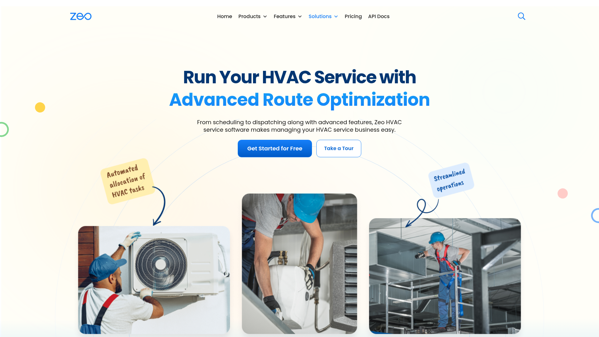
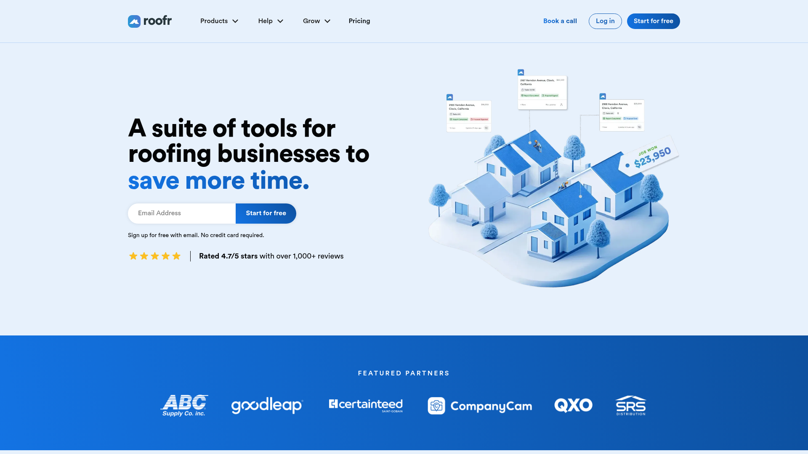

HVAC Redesign Brainstorm
TL;DR
Instead of another HVAC contractor page with stock tech photos, AR Air can look like a premium equipment/service brand: clean product object, crisp blue UI, and fast-response conversion paths.Current State

The old direction tried to dramatize the mechanical system. The new direction should make the equipment feel calm and expensive.Ideas
- Product launch hero: one AC condenser as the device, with AR Air service copy around it.
- Dispatch board trust strip: small operational stats like 24/7, same-day response, residential + commercial, certified HVAC/electrical.
- Service console rows: each service reads like a clean control panel row with one action.
- Maintenance membership teaser: planned care before emergency calls instead of fake pricing.
- Footer as service-area directory starter for future SEO pages.
Cross-Category References
1. taskrabbit

Marketplace services landing page for property rental and home management, showing a list of task categories (deep cleaning, home repairs, mounting, light installation, lifting/shifting, delivery, carpentry, yard work) with images and “Book Now” CTA buttons. A right sidebar explains the booking flow (select a tasker, schedule, pay when complete) and includes customer testimonials, with top navigation for services and sign up/log in.Source: https://www.taskrabbit.com/services/property-rentals
2. particle

Marketing landing page for an IoT platform focused on HVAC, featuring a hero headline about improving reliability, efficiency, and safety with a primary “Contact your HVAC experts” CTA plus top navigation (Platform, Supported devices, Solutions, Developers, Pricing) and a “Contact sales” button. The page highlights benefits and features in icon-based sections (prevent anomalies, reduce truck rolls, lower energy use, scalable/open/customizable/secure), includes an on-demand webinar promo, customer testimonial, “Why Particle” value props, and a bottom CTA to “Build more profitable HVAC systems today.Source: https://www.particle.io/iot-solutions/hvac/
3. zeo-route-planner

Landing page for ZEO HVAC service management software promoting advanced route optimization from scheduling to dispatching, featuring illustrative images of technicians installing AC units and working on ducts, highlighted sticky notes for "Scheduling" and "Dispatching," and a prominent "Get Started Free" call-to-action button.Source: https://zeorouteplanner.com/hvac-software/
4. roofr

Landing page for Roof. ai, a SaaS platform offering a suite of time-saving tools for roofing businesses including invoicing and productivity features, with prominent navigation for Products, Tools, and Pricing, a "Sign up for free" call-to-action, illustrative 3D houses and notes graphics, and a section showcasing featured partners like ABC, Goodloop, and SRS.Source: https://roofr.com/
Reference Index
- 1. taskrabbit - Marketplace services landing page for property rental and home management, showing a list of task categories (deep cleaning, home repairs, mounting, light installation, lifting/shifting, delivery, carpentry, yard work) with images and “Book Now” CTA buttons. A right sidebar explains the booking flow (select a tasker, schedule, pay when complete) and includes customer testimonials, with top navigation for services and sign up/log in.
- 2. particle - Marketing landing page for an IoT platform focused on HVAC, featuring a hero headline about improving reliability, efficiency, and safety with a primary “Contact your HVAC experts” CTA plus top navigation (Platform, Supported devices, Solutions, Developers, Pricing) and a “Contact sales” button. The page highlights benefits and features in icon-based sections (prevent anomalies, reduce truck rolls, lower energy use, scalable/open/customizable/secure), includes an on-demand webinar promo, customer testimonial, “Why Particle” value props, and a bottom CTA to “Build more profitable HVAC systems today.
- 3. zeo-route-planner - Landing page for ZEO HVAC service management software promoting advanced route optimization from scheduling to dispatching, featuring illustrative images of technicians installing AC units and working on ducts, highlighted sticky notes for "Scheduling" and "Dispatching," and a prominent "Get Started Free" call-to-action button.
- 4. roofr - Landing page for Roof. ai, a SaaS platform offering a suite of time-saving tools for roofing businesses including invoicing and productivity features, with prominent navigation for Products, Tools, and Pricing, a "Sign up for free" call-to-action, illustrative 3D houses and notes graphics, and a section showcasing featured partners like ABC, Goodloop, and SRS.
- 5. unwind - Landing page for a wellness/cryotherapy service promoting “precision cooling for peak recovery,” with navigation to services, team, join now, personal training, and testimonials plus a hero image of session controls. The page highlights benefits, explains how cryotherapy works in 3 steps, shows testimonials and an FAQ accordion, and provides two location sections with addresses, contact info, hours, maps, and policy links.